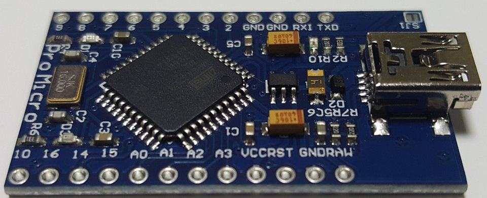

Optiboot boot loader แก้ไขปัญหาใช้ Watch dog ใน Arduino Pro / Pro Mini ราคาถูกจากจีนไม่ได้

บันทึกการแก้ไขปัญหา ซื้อ Arduino ราคาถูกจากจีนมา (จากเว็บ Aliexpress.com) พบว่ารุ่นที่ซื้อมันไม่สามารถใช้งาน Watch dog ได้ เพื่อแก้ไขปัญหาดังกล่าวจำเป็นต้องใช้ Boot loader ตัวใหม่ที่รองรับ จากการศึกษาพบว่า Optiboot เสถียร รองรับ Watch dog และสามารถใช้งานกับบอร์ดจีนที่ซื้อมาได้
การเพิ่ม Board สำหรับโปรแกรม Arduino IDE
เพิ่มรายการสำหรับเรียกใช้บอร์ด Arduino Pro / Pro mini แบบ 5V. 16MHz ทั้ง ATmega328p และ ATmega168p
ให้เปิดไฟล์ในโฟลเดอร์ของ Arduino IDE ชื่อ boards.txt ในโฟลเดอร์ Arduino\hardware\arduino\avr\boards.txt ถ้าลงโปรแกรมใน Program Files จะอยู่ใน C:\Program Files (x86)\Arduino\hardware\arduino\avr\boards.txt
ในกรณีที่ลง board เพิ่ม เช่น ลง esp8266 ตัวไฟล์ board.txt ที่โปรแกรมใช้งานอาจจะไปอยู่ที่ %LOCALAPPDATA%\Arduino15\packages\arduino\hardware\avr\1.8.6\boards.txt แทน โดยตัวเลข 1.8.6 จะเป็นเลข version ที่อาจเป็นเลขอื่นได้ตามแต่รุ่นโปรแกรมที่ลง
ให้ทำการเพิ่มรายการบอร์ดใหม่เข้าไปต่อท้ายดังนี้
## Arduino Pro or Pro Mini optiboot (5V, 16 MHz) w/ ATmega328P ## -------------------------------------------------- pro.menu.cpu.16MHzatmega328optiboot=ATmega328P optiboot (5V, 16 MHz) pro.menu.cpu.16MHzatmega328optiboot.upload.maximum_size=30720 pro.menu.cpu.16MHzatmega328optiboot.upload.maximum_data_size=2048 pro.menu.cpu.16MHzatmega328optiboot.upload.speed=115200 pro.menu.cpu.16MHzatmega328optiboot.bootloader.low_fuses=0xFF pro.menu.cpu.16MHzatmega328optiboot.bootloader.high_fuses=0xDA pro.menu.cpu.16MHzatmega328optiboot.bootloader.extended_fuses=0xFD pro.menu.cpu.16MHzatmega328optiboot.bootloader.file=optiboot/optiboot_atmega328.hex pro.menu.cpu.16MHzatmega328optiboot.build.mcu=atmega328p pro.menu.cpu.16MHzatmega328optiboot.build.f_cpu=16000000L ## Arduino Pro or Pro Mini optiboot (5V, 16 MHz) w/ ATmega168 ## ------------------------------------------------- pro.menu.cpu.16MHzatmega168optiboot=ATmega168 optiboot (5V, 16 MHz) pro.menu.cpu.16MHzatmega168optiboot.upload.maximum_size=14336 pro.menu.cpu.16MHzatmega168optiboot.upload.maximum_data_size=1024 pro.menu.cpu.16MHzatmega168optiboot.upload.speed=115200 pro.menu.cpu.16MHzatmega168optiboot.bootloader.low_fuses=0xff pro.menu.cpu.16MHzatmega168optiboot.bootloader.high_fuses=0xdd pro.menu.cpu.16MHzatmega168optiboot.bootloader.extended_fuses=0xF8 pro.menu.cpu.16MHzatmega168optiboot.bootloader.file=optiboot/optiboot_atmega168.hex pro.menu.cpu.16MHzatmega168optiboot.build.mcu=atmega168 pro.menu.cpu.16MHzatmega168optiboot.build.f_cpu=16000000L
หากเพิ่มถูกต้อง จะมีเมนูให้เลือกเพิ่มเข้ามาใน IDE
การไขปัญหา burn bootloader แล้วขึ้น Error
จากการทดลอง burn bootloader Optiboot กับ Arduino pro/ pro mini ของจีน พบว่าขึ้น Error จำเป็นต้องแก้ไข command line ของโปรแกรม burn bootloader โดยใส่ -F เข้าไปในคำสั่งดังนี้
เปิดไฟล์ C:\Program Files (x86)\Arduino\hardware\arduino\avr\platform.txt
ทำการเพิ่ม -F เข้าไปในคำสั่ง 2 คำสั่ง tools.avrdude.erase.patter และ tools.avrdude.bootloader.pattern
tools.avrdude.erase.pattern="{cmd.path}" -F "-C{config.path}" {erase.verbose} -p{build.mcu} -c{protocol} {program.extra_params} -e -Ulock:w:{bootloader.unlock_bits}:m -Uefuse:w:{bootloader.extended_fuses}:m -Uhfuse:w:{bootloader.high_fuses}:m -Ulfuse:w:{bootloader.low_fuses}:m
tools.avrdude.bootloader.pattern="{cmd.path}" -F "-C{config.path}" {bootloader.verbose} -p{build.mcu} -c{protocol} {program.extra_params} "-Uflash:w:{runtime.platform.path}/bootloaders/{bootloader.file}:i" -Ulock:w:{bootloader.lock_bits}:m